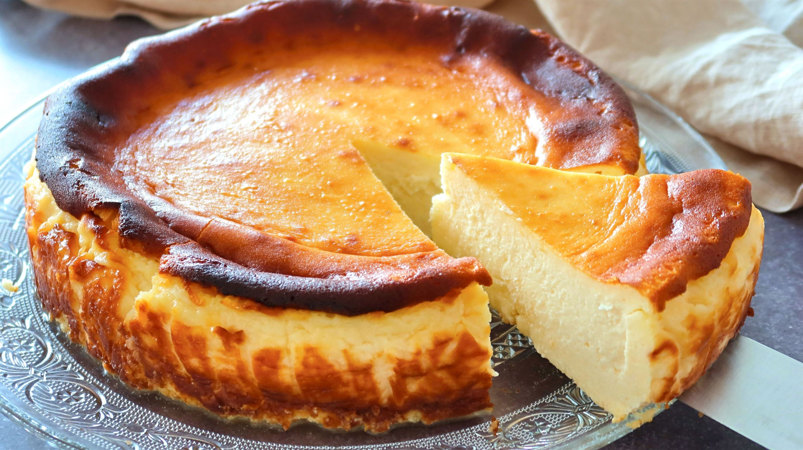
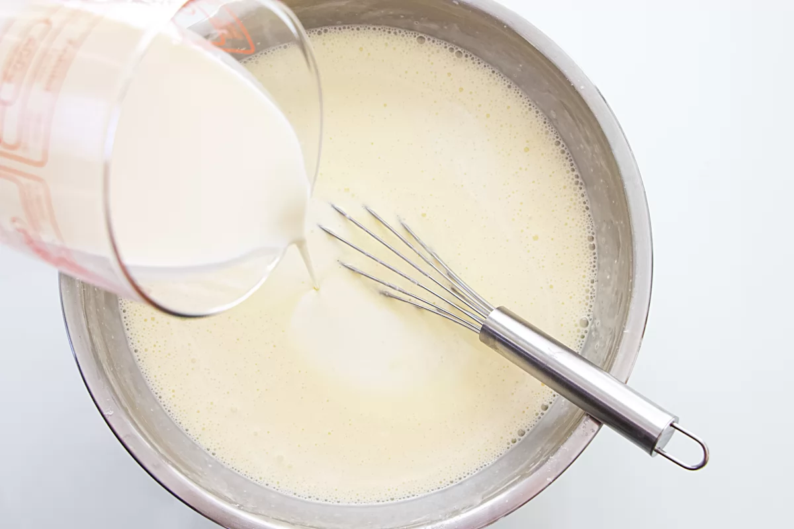
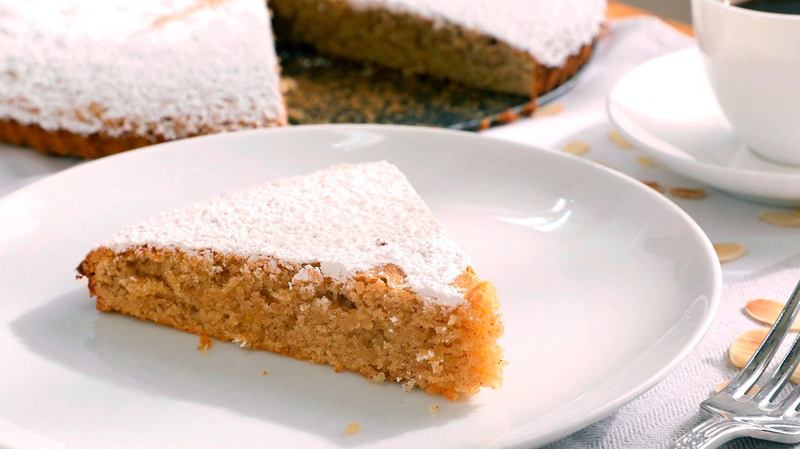
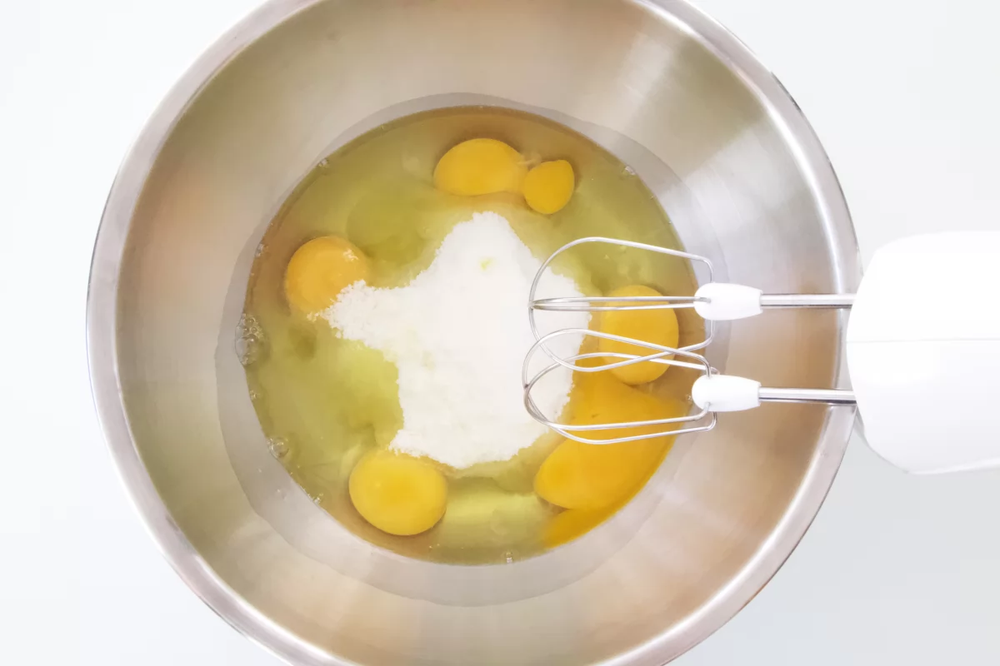
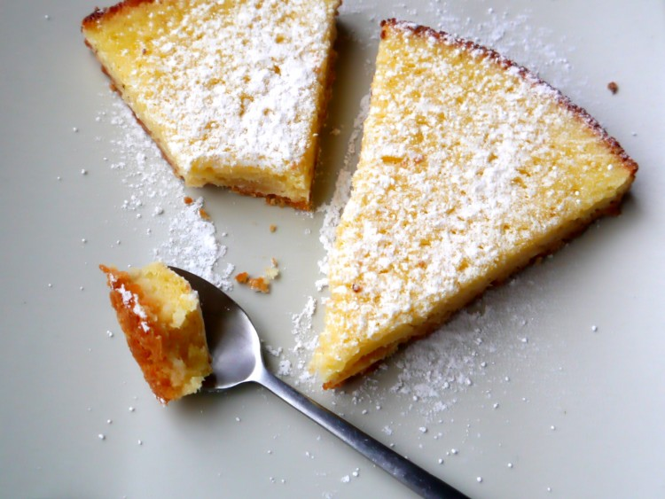
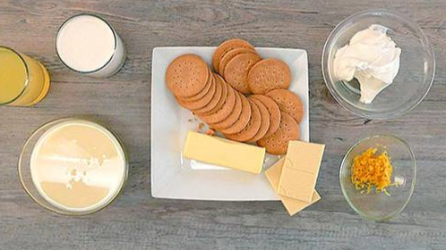
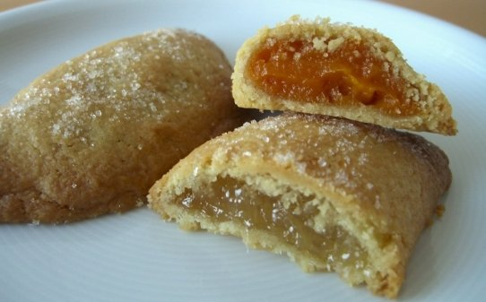
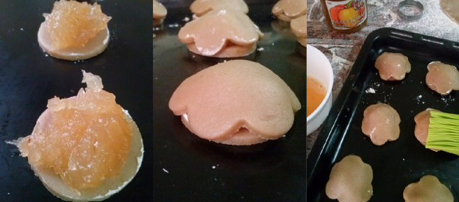
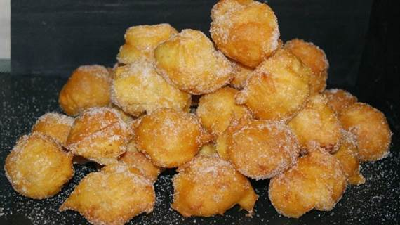
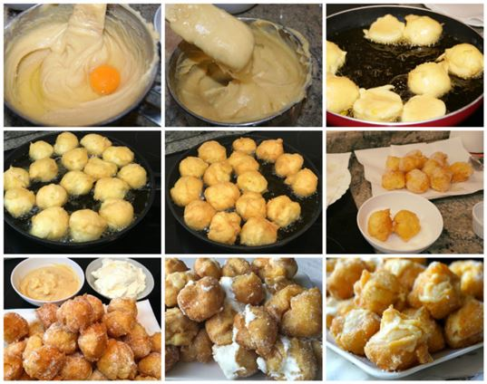

|
Mundo Pan |
Panaderia | Repostería | Pasteleria | Requisitos | Sobre Nosotros |
|---|
|
Mundo Pan |
Panaderia | Repostería | Pasteleria | Requisitos | Sobre Nosotros |
|---|

Tarta de queso El universo de las tartas de queso es inabarcable y la moda, ya bien asentada, nos lleva a vez tartas de todos los tipos imaginables. Las opciones son casi eternas, diríamos que una tarta de queso por cada casa o por tipo de queso, pero con esta alternativa os vais a coronar. Además, la ventaja de esta tarta es que la podemos cuajar más o menos a nuestro antojo --aunque necesita reposo, evidentemente--, por lo que se puede decidir casi si comer esta tarta de queso con cuchara o con pajita. |
 |
Ingredientes
Queso blanco cremoso para untar estilo Philadelphia 800 g
Huevos de tamaño L 4
Maicena 15 g
Azúcar 200 g
Nata líquida 400 ml
Galletas tipo María para la base 125 g
Mantequilla para la base 60 g
Receta
Con esta receta nos van a salir unas ocho o diez raciones, dependiendo de lo glotones que seamos en casa, así que necesitaremos un molde desmontable de 26 centímetros y también un horno con ventilador. Además, para acelerar el proceso, podemos recurrir al robot de cocina.(aunque puedes hacer esto tu msimo)
En él vamos a triturar las galletas con la mantequilla durante un par de minutos para que quede homogéneo y cuando esté esta masa lista, la ponemos en la base del molde apretando bien y llevando al congelador entre veinte minutos y media hora.
Hornea
Mientras tanto, precalentamos el horno a 170 ºC y vamos triturando el resto de ingredientes en el robot de cocina hasta que quede bien homogéneo. Sacamos el molde frío del congelador, rellenamos con el resto de la mezcla, y lo horneamos 33 minutos a 170 ºC con el ventilador puesto.
Cuando haya pasado ese tiempo, dejamos reposar a temperatura ambiente para que la tarta se asiente y cuaje, y así no se desmoronará por completo al cortarla. Si queréis que os quede menos cuajada solo tenéis que recortar algún minuto a la cocción y, si la queréis más estable, aumentarla ligeramente o dejar más reposo. Disfruta
Tarta de Santiago La Tarta de Santiago es el dulce más típico de la cocina gallega es facilmente reconocida por su emblemática Cruz de Santiago en el centro. La noticia más antigua sobre la elaboración y consumo de esta tarta de almendras es confusa pero se sitúa en la visita que Pedro Portocarrero realizó a la Universidad de Santiago en la segunda mitad del siglo XVI y la investigación que llevó a cabo en torno a las comidas que se daban a los profesores. Siglos más tarde (1838) en los Cuadernos de Confitería que recopiló Bartolomé de Leybar se incluye un dulce con una composición muy parecida a la actual Tarta de Santiago. |
 |
Ingredientes
300 g de azúcar común.
300 g de almendra molida.
4 huevos L.
1 ralladura de limón.
50 g de azúcar glas para la decoración.
Preparación:
Precalienta el horno a 170º con calor abajo y arriba ventilador (o calor arriba y abajo a 180º) y la rejilla en la guía central.
Forra el molde (mejor bajo y desmontable) recortando la medida del fondo en un círculo de papel vegetal que colocaremos en el fondo del molde sobre pequeños pegotitos de mantequilla para que el papel pegue mejor. Enmantequillamos los laterales o usamos spray desmoldante. Reservamos.
Tarta
Mezcla el azúcar con los huevos, la ralladura de limón hasta que blanqueen.
Agrega la almendra, y mezcla, obtendremos una pasta como de mazapan y por tanto, densa.
Hornear
Vuelca la mezcla en el molde y hornea durante aproximadamente 25 o 30 minutos . Vigilamos que se dore ligeramente la superficie que quedará suavemente crujiente y quebradiza, realmente es casi lo único que necesitamos que se dore, la miga, debe quedar jugosa, apenas asustada por el calor del horno, es una mezcla de azúcar, huevos y almendra no necesita apenas cocción y vamos a preservar justamente esa humedad.
Termina
Finalizado el horneado, retira y deja enfriar. Desmolda.
Disfruta
Tarta de limón Esta receta es tradicional de las cocinas de Francia, Estados Unidos y el Reino Unido, si bien se conoce en muchos otros lugares. Se consume como postre o como parte de la merienda. El lemon pie es más bien una tarta, es decir, una base de masa y un relleno. Como su nombre indica está hecha con limón, más bien con el zumo del limón, azúcar y huevos. Todo ello mezclado hace el famoso custard, el relleno cremoso amarillo que es tan típico de la tarta de limón. Una aclaración: el lemon pie original, el clásico, el infaltable de cada banquete que daba la reina Isabel I de Inglaterra, no necesariamente lleva esa cobertura blanca esponjosa con que se conoce en la actualidad. |
 |
Ingredientes
1 1/2 tazas de galletas maría molidas
1/4 taza (1/2 barra) de mantequilla, derretida.
1 lata (14 onzas) de Leche Condensada Azucarada.
1 paquete (8 onzas) de queso crema, a temperatura del ambiente.
1 cucharada de ralladura de limón, lima o naranja.
1/3 taza de jugo fresco de limón, lima o naranja.
Precalienta
Precalentar el horno a 350° F. Rociar con spray antiadherente un molde de tarta desarmable de 9 a 10 pulgadas.
Galleta
Combinar las galletas y la mantequilla en un tazón mediano; presionar la mezcla contra el fondo del molde. Hornear por 5 minutos.
Crema de Limon
Batir la leche condensada azucarada y el queso crema en una batidora eléctrica hasta que esta suave. Incorporar la ralladura de limón y el jugo de limón. Verter sobre la corteza; alisar la superficie.
Hornea
Hornea durante 25 a 28 minutos, o hasta que el relleno esta cuajado. Dejar enfriar a temperatura del ambiente; refrigerar por lo menos 2 horas. Decorar con bayas frescas y/o fruta cortada, si deseas.
Pasteles de Cabello de Ángel Por Murcia es un dulce muy típico, se vende durante todo el año, no solamente en la época de fiestas. Los venden en todas las pastelerías y panaderías. Había probado hace tiempo otra receta pero la verdad es que no me gustó como quedó la masa y no volví a intentarlo hasta que conseguí esta receta de una abuela pastelera... se las dejo aquí para que se animen a hacerlos y les puedo asegurar que salen buenísimos! Antes de empezar con el procedimiento les cuento que esta masa queda blanda y un poco pegajosa, así que no os asustéis, por este motivo se hace un día antes y se guarda en el frigorífico, para que a la hora de manipularla esté bien fría y la podamos trabajar. |
 |
Ingredientes (6 unidades)
3 huevos
1,200 kg Harina.
400 grs Azúcar.
300 grs Manteca de cerdo.
4 Huevos.
10 grs Bicarbonato1 cdita Canela en polvo.
250 ml Vino Moscatel o vino dulce.
1 cda Ralladura de limón.
1 bote Cabello de Angel.
Preparacion:
En un recipiente grande mezclamos la harina, el bicarbonato, la canela.
En otro recipiente batimos los huevos, azúcar y la ralladura de limón hasta que la mezcla quede homogénea.
Agregamos el vino y mezclamos hasta que se integre bien.
Ahora toca mezclar con las manos! Si tenéis una batidora con pala mezcladora y tiene buena potencia, podéis usarla y así no os pringáis las manos!
Agregamos la mezcla de los líquidos y la manteca de cerdo en el recipiente donde teníamos los ingredientes secos (harina, canela y bicarbonato) y mezclamos hasta unir muy bien todos los ingredientes.
Quedará una masa muy pringosa, pero una vez fría la podremos manejar bien.
Guardáis la masa en el frigorífico hasta el día siguiente.
Pasado el tiempo recomendado, sacamos la masa del frigorífico, enharinamos la mesa de trabajo, colocamos la masa fría y esparcimos un poco de harina por encima de la masa. Amasamos un poco hasta formar un bollo tierrno. Volvemos a enharinar la mesa de trabajo y extendemos la masa con la ayuda de un rodillo, dejándola de 3 ó 4 mm de espesor, yo la hago de ese grosor, pero vosotros podéis variarlo, no más fino, pero si podéis hacerlo más grueso.
Cortar círculos con la ayuda de un cortante (en este caso yo elegí uno redondo y otro con forma de flor, pero podéis usar el que tengáis en casa) siempre teniendo en cuenta que la mitad de ellos tendrá que ser un poquito más grande porque taparán el pastelillo. Mitad de círculos pequeños y mitad de flor o de círculos un poquito más grandes. También podéis hacerlos tipo tarteletas como se ve en la foto del paso a paso.
Horneado
Ponemos los círculos pequeños sobre una placa engrasada (yo uso un poco de manteca de cerdo), con una cucharilla ponemos un poco de cabello encima y tapamos con los que cortamos en forma de flor (o círculos más grandes) Pincelamos con huevo batido y llevamos a horno precalentado a 180ºC más o menos durante 20 a 25 minutos.
Pasado este tiempo, cuando veáis que están doraditos y crujientes, los retiráis del horno y los dejáis enfriar. Estarán listos para comer!!!
Buñuelos Los buñuelos son un postre muy típico de la gastronomía española. Te traigo una receta fácil para preparar los buñuelos de viento clásicos y te explico cómo preparar el relleno de crema pastelera de vainilla y de chantilly o nata montada. Además, te cuento cómo conseguir que aumenten muchísimo y queden muy huecos. Te animo a que los prepares porque son una verdadera delicia. Verás que tu familia agradece ese ratito en la cocina. Un postre de gran lujo por muy poco dinero. |
 |
Ingredientes (20 unidades)
150 g de harina.
250 ml de litro de agua.
4 huevos.
1 limón.
50 g de mantequilla.
5 g de sal.
10 g de levadura química o polvos de hornear.
Aceite para freír.
Azúcar para rebozar.
Ingredientes crema pastelera:
2 yemas de huevo.
250 ml de leche.
20 g de maicena.
75 g de azúcar.
1 cucharadita de vainilla.
Ingredientes nata:
250 ml de nata líquida (35% de mat grasa).
75 g de azúcar.
Relleno de crema pastelera
Puedes preparar la crema pastelera al fuego o al microondas. Vierte en un cazo la leche y la maicena y mezcla con unas varillas. Añade las yemas de huevo, el azúcar y un poco de vainilla. Bate de nuevo.
Lleva el cazo al fuego y, sin dejar de remover con las varillas, calienta a fuego moderado hasta que espese.
Cuando la crema haya espesado, retira del fuego. Vierte la crema pastelera en un plato y tapa con film, haciendo que el film esté en contacto con la crema. De esta manera, evitarás que se seque y forme costra.
Deja enfriar a temperatura ambiente y, luego, llévalo a la nevera hasta el momento de usarla. Si la preparas en el microondas, deberás calentar en un recipiente apto y sacarlo cada minuto para batir la crema. Cuando salga espesa, ya puedes verterla en un plato y seguir los pasos que te acabo de indicar.
Relleno de nata
Mezcla el azúcar con la nata bien fría. Bate primero con poca potencia y, luego,ve aumentando la potencia. Cuando veas que la nata ya ha espesado, ya la puedes guardar en el frigorífico hasta el momento de utilizarla.
Buñuelos
Calienta el agua al fuego. Añade uno o dos trozos de piel de limón (puedes ayudarte de un pelador para cortar la piel de limón muy fina y sin la parte blanca), la mantequilla y una pizca de sal. Deja que hierva hasta que se derrita la mantequilla y retira la piel del limón.
Mezcla harina y la levadura química o polvo de hornear. Vuelca de golpe esta harina en el cazo de agua hirviendo y, sin retirar del fuego, remueve hasta obtener una masa muy dura. Retira del fuego y sigue mezclando. Deja reposar durante 5 minutos.
Añade un huevo a la masa y remueve hasta que se integre y la masa tenga una consistencia muy espesa. Añade el segundo huevo, mezcla de nuevo y así sucesivamente hasta haber incorporado los cuatro huevos. Es importante añadirlos de uno en uno. Debes obtener una masa cremosa y algo espesa. Buñuelos de viento rellenos de crema y nata (TRUCO para que queden muy huecos)
Coloca una sartén al fuego con abundante aceite, aunque he utilizado aceite de oliva virgen extra, puedes usar el que habitualmente emplees para freír. Toma una porción de masa con una cucharilla de postre y, con otra cuaharilla arrástrala y déjala caer en el aceite caliente. Debes dejar una buena separación entre los buñuelos de viento porque crecerán muchísimo. Recuerda que los buñuelos tienen que flotar en el aceite.
A la vez que se fríen, verás que se van girando ellos solos. Puedes moverlos para separarlos y que tengan espacio suficiente para darse la vuelta. Cada uno de los buñuelos va a abrirse y, con ello, saldrá la parte de dentro cruda y crecerá hasta quedar totalmente hueco por dentro. Este es el TRUCO: deja que crezcan y no te apures si se abren, es lo normal para conseguir que queden huecos.
Cuando estén bien dorados, saca los buñuelos a un plato con papel absorbente y pásalos inmediatamente por el azúcar sin dejar que se enfríen. Cuando se enfrían, el azúcar ya no se adhiere.
Para rellenar los buñuelos de viento, hazles un pequeño corte con unas tijeras y con la ayuda de una cuchara o de la manga pastelera, rellénalos al gusto con la nata o la crema bien frías. También puedes rellenarlas con las dos ;).
| Pagina web hecha por Rubén Calomarde y Daniel Mora |
|---|